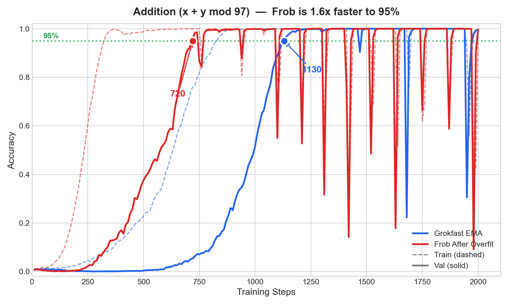
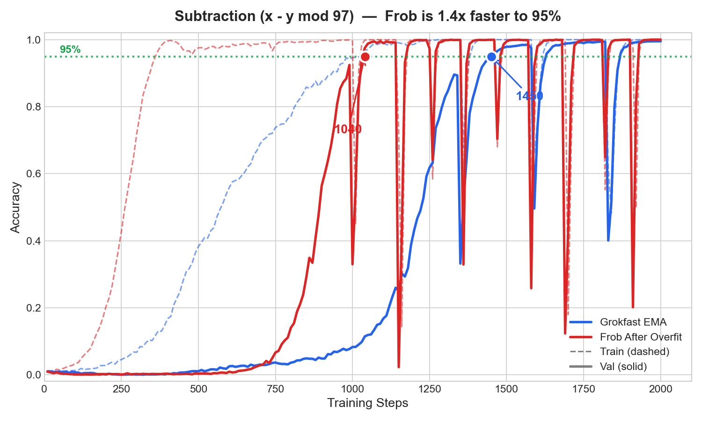
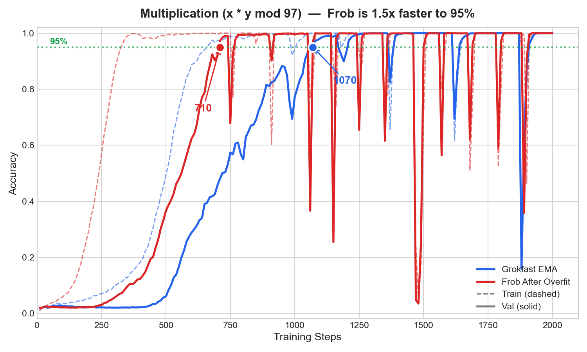
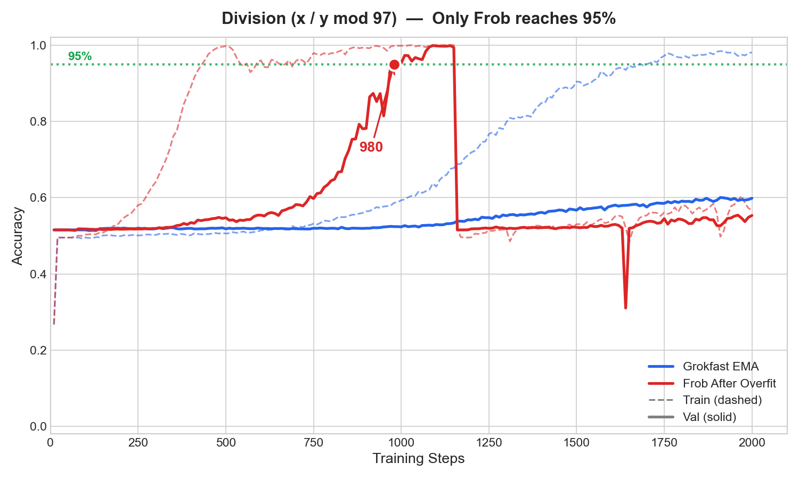
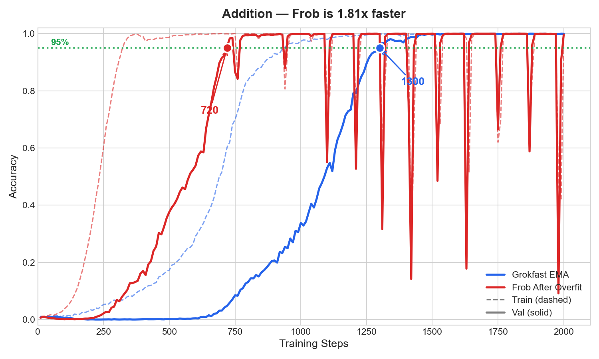
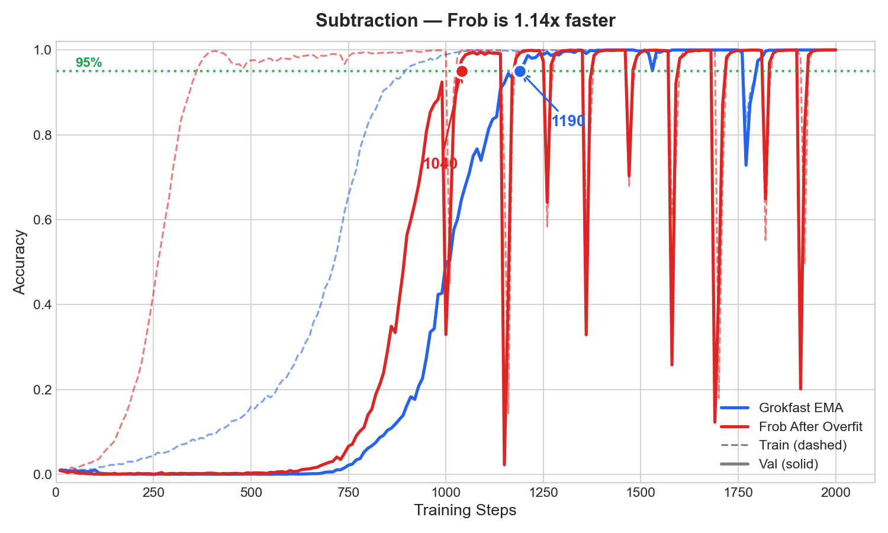
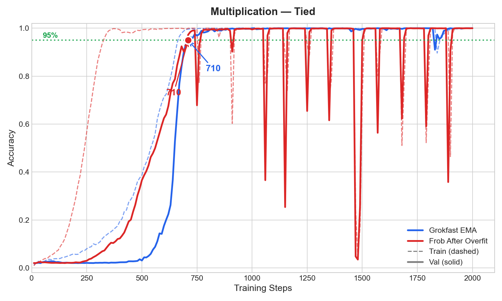
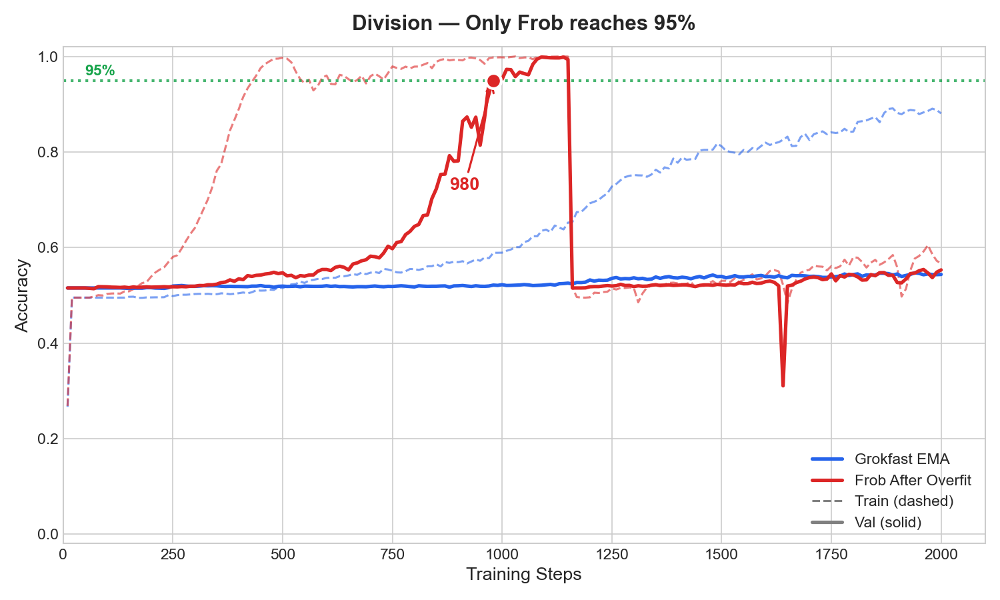

I learned about grokking fairly recently, and thought it was quite interesting. It sort of shook up how I thought about training. Overfitting to your training data was a cardinal sin for decades, but we're finding it may not be so bad?
I had a pretty poor understanding of what was going on here, so I decided to dig deeper. The intuition from the literature seemed to be that grokking occurs because the model overfits, then as you force the model to compress over time (via weight decay), it begins to find the minimal solution on your training set... And this minimal solution seems to be a good proxy for generalization.
I had a pretty simple idea as I learned about this... What if we just let it overfit then, and then forced the model to compress via its loss function?
First Success
All of the benchmarks for grokking seem to be around modular arithmetic operations, so naturally, I went with that.
At first I tried SVD and forcing the loss function to consider the nuclear norm. To my surprise, the model converged in less steps! Whoa!
But... each step was 258x slower...
Calculating the nuclear norm was O(n3), so I didn't really think it was worth it, but I was still excited about the prospect of grokking faster. I did some research into faster ways of calculating the size of the model as part of its loss function and ended up at... L2 Regularization... A technique that has been around since the 1940s...
I was a bit embarrassed, but nonetheless, continued on. My new loss function became:
My embarrassment was pretty quickly offset by the fact that L2 Regularization after overfitting worked pretty well with not much trouble!
I also found it interesting that if I scale the compression up, we can get models that have effective ranks as low as 20 if we bump up the lambda or use log-det penalties! I think this is still worth exploring, but I got too sidetracked by the speed to continue down that path... Perhaps I'll return to it.
At the risk of LLM psychosis, I consulted Claude Opus 4.5 because well... I don't know what I don't know, and don't want to overclaim. To my devastation, I was actually told that my 2x speedup was measly compared to Grokfast's 50x speedup.
I felt pretty defeated, but when I looked into the details of Grokfast, I noticed that the 50x speedup was a nice headline... but it was relative to a baseline with no weight decay at all, which takes ~40,000 steps to grok. My baseline with weight decay was already grokking in ~2,000 steps. We were comparing apples to oranges.
So I decided to run an actual head-to-head comparison using the Grokfast authors' own codebase.
The Real Comparison
I then added my delayed compression code to their codebase:
def frobenius_norm_loss(model):
frob_loss = 0.0
for name, param in model.named_parameters():
if 'weight' in name and param.requires_grad:
frob_loss += torch.norm(param, p='fro') ** 2
return frob_loss
# In training loop, after model hits 99% train accuracy:
if train_acc >= 0.99:
loss = ce_loss + 0.01 * frobenius_norm_loss(model)Then I ran both methods on all four modular arithmetic operations with a limit of 2,000 steps. Here are the results:




Now, my method seems to suffer from catastrophic forgetting because of the compression pressure I'm putting it under, but I think there are probably solutions to that, like decreasing compression pressure as time goes on. I did find it especially interesting that Grokfast didn't even reach division!
Doubt Creeps In
I am extremely scared to say I did something faster out of the belief that there's something I must be missing. So, as a final test, I ran a hyperparameter sweep. Turns out I wasn't using optimal Grokfast parameters. Here are the results when I reran the test with the best settings for both methods:
| Operation | Grokfast EMA | Delayed Compression | Winner | Speedup |
|---|---|---|---|---|
| Addition (+) | 1300 steps | 720 steps | Delayed Compression ✓ | 1.81x |
| Subtraction (-) | 1190 steps | 1040 steps | Delayed Compression ✓ | 1.14x |
| Multiplication (*) | 710 steps | 710 steps | Tie | 1.00x |
| Division (/) | N/A | 980 steps | Delayed Compression ✓ | - |




Even with proper tuning, delayed compression wins on addition and subtraction, ties on multiplication, and Grokfast fails entirely on division. The results are similar across multiple seeds too.
The graphs are still pretty ugly because of the instability after grokking, but... I have to move onto other things for now and was pretty satisfied.
Conclusion
I'm worried that I'm still missing something... It was suspiciously simple. But if the results hold up, there may be even more value than we thought in letting a model overfit first, then compressing.
There are lots of directions to take this... I don't know how well this would scale to other domains, and I'd really like to fix the instability.
You can find the code here:
View on GitHubLet me know what you think :)